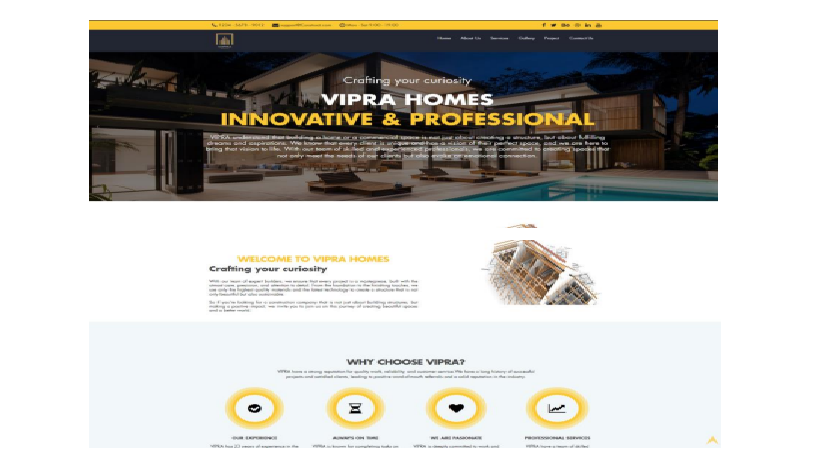

Project 1 Network Design for FIRE DETECTOR
The "Fire Detector" project is a cutting-edge endeavour that aims to revolutionize fire safety and prevention through the development of an intelligent fire alarm system. Traditional fire alarm systems often suffer from false alarms and limited situational awareness, leading to inefficiencies and potential safety risks. In contrast, Smart Fireguard utilizes advanced sensor technologies and real-time data analysis to create a highly responsive and accurate fire detection and prevention system.
I would like to express my heartfelt gratitude to all those who contributed to the successful completion of this project. First and foremost, I extend my deepest thanks to my dedicated team members whose unwavering commitment and hard work made this project a reality. Additionally, I am grateful to our mentors and advisors for their invaluable guidance and expertise throughout the project's lifecycle. Together, we have achieved a remarkable milestone, and I am truly thankful for everyone's efforts and support.
Result

Project 2&3 Website Vipra Homes
As a part of the project assigned by the ADIT instructors, we, Cloud 9, are working on a real-time project for an upcoming venture named "VIPRA," founded by prominent Calicut-based builders Praveen and Vipin, who have been working in the construction field for the past 20 years. Our project is a website that includes the complete details about the company "VIPRA." The website includes 5 pages that consist of a home page, about page, services page, projects page, and contact page. Customers can inquire about the projects uploaded on the website with the help of an enquiry form included in it. The functional requirements for the project encompass HTML, CSS, Bootstrap, and JavaScript.We would like to express our heartfelt gratitude to the entire VIPRA team for their unwavering commitment to excellence in the construction industry. Your dedication to delivering top-tier construction solutions, meticulous project management, and innovative approaches have consistently set new standards of quality and efficiency. VIPRA's collaborative spirit, professionalism, and relentless pursuit of customer satisfaction have made them a trusted partner in turning construction dreams into reality. With deep appreciation, we acknowledge VIPRA for their exceptional contributions to the field, and we look forward to continued success together."
Result
Project 4 Learning Website Using Django
Popular code editors and integrated development environments (IDEs) are known for their versatility and adaptability to various programming languages, while collaborative coding tools have gained traction in the era of remote work and learning. However, a common challenge is the fragmented learning experience caused by the separation of learning materials and practical coding environments. Future trends in code editors and learning applications include increased AI integration for personalized learning experiences, expanded support for diverse programming languages, enhanced collaboration features, and growing emphasis on mobile-friendly solutions. These developments will further revolutionize how individuals acquire coding skills and create a more accessible and interactive learning environment."